What to install, the ideas Vortex is built on, and the actual screens you’ll use — illustrated with real screenshots from a running instance, not mockups. About a five-minute read for the tour itself.
Two things are required. Two more unlock more of the product, but Vortex runs without them. Vortex checks all four itself — this is its own status bar, once every light is on:
A Java 25 runtime (JRE) is enough to run the jar — the full JDK is only needed for building Vortex itself from source.
The actual load generator — Vortex builds the workload and reads the results, k6 is what sends the traffic.
Spins up the service under test itself from an image (every screenshot in this tour runs this way), or just its dependencies. Skip it if your service is already running and reachable directly.
Local AI-assisted interpretation. Skip it and Vortex stays fully usable — findings are deterministic either way.
No build, no installer, no account — download the jar, run java -jar
vortex.jar, and open http://127.0.0.1:7717. Vortex listens on
127.0.0.1 only; nothing leaves your machine.
One Service. A Workload it actually has to survive. An Evaluation asking whether it did. A Quality gate deciding what counts as “did.” One Run to find out. Evidence at the end of it — not just a number.
The one system under test. Vortex measures one at a time.
A traffic condition — rate split across operations, held for a duration.
The performance question a run answers — not “which workload,” but what you’re trying to learn.
The objectives a run has to hold — p95 latency, p99 latency, error rate.
One immutable execution, kept with the exact workload it applied.
What happened, plus the conditions it happened under — not just a number on its own.
Real Vortex Workbench · Actual local screens
From the demo service that ships with Vortex, to a verdict — the same nine steps every service goes through.
Creation is a separate act from configuration — a name is all that’s required. A repository path is optional; a service tested remotely never needs one.
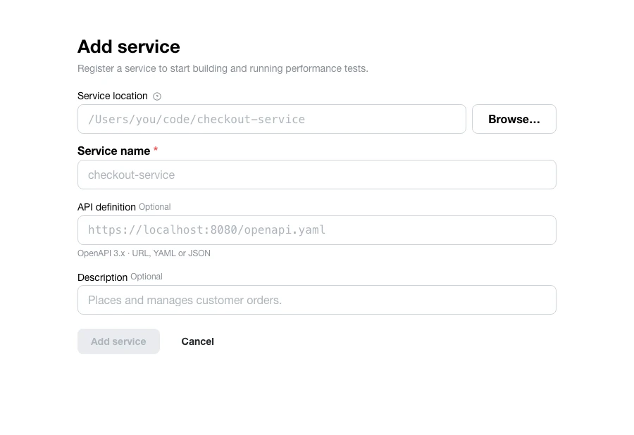
Paths, methods, and schemas are parsed deterministically — no AI involved. Operations that write data are flagged for review before anything can send traffic to them.
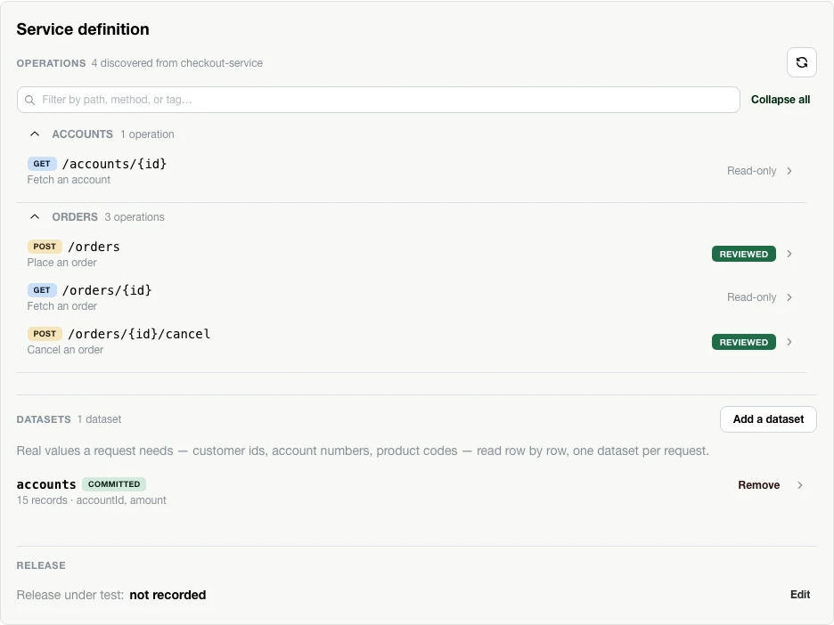
Every field a write needs gets a value source: fixed, generated, a dataset column, or an environment variable. Here, an order’s account id is a generated UUID and its amount is a fixed value.
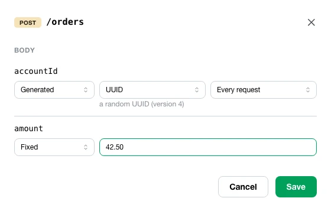
Pick an intent — Smoke, Average load, Stress, Spike, Soak, or Breakpoint, each phrased as a question — then a total arrival rate or concurrency and a duration. The operation mix and its share of traffic stay visible as you go.
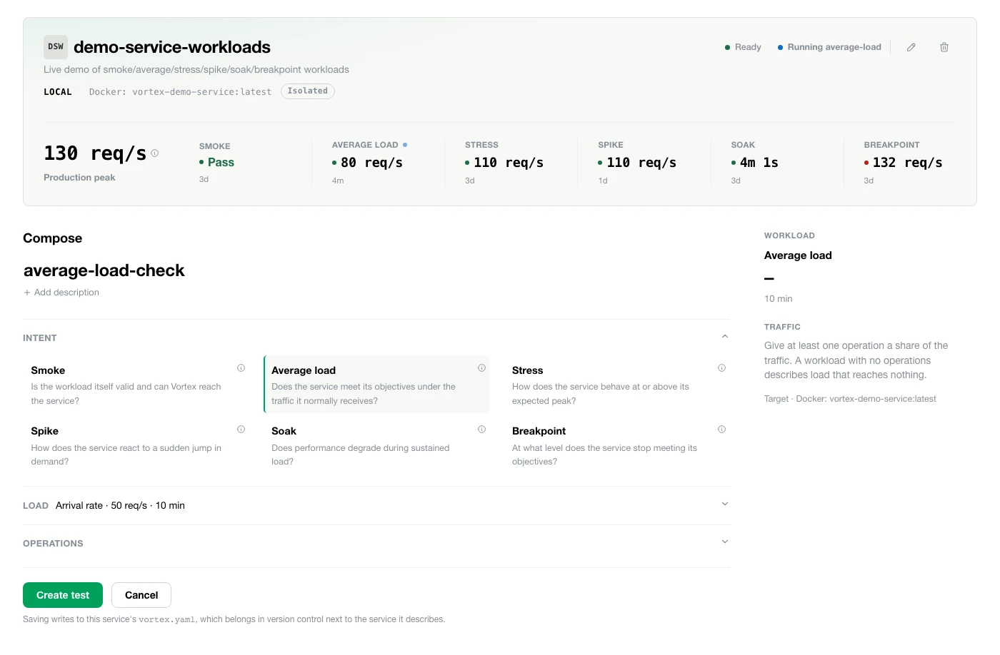
The quality gate a run has to clear — p95 latency, p99 latency, error rate. Saving always replaces the whole set, so a blank field drops that objective rather than silently keeping whatever was there.
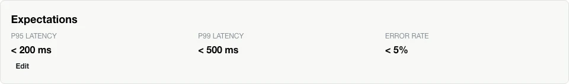
A plain-English summary of exactly what’s about to happen — the target, the operation mix, the environment classification, and every condition that has to hold for a pass. Nothing is sent yet.
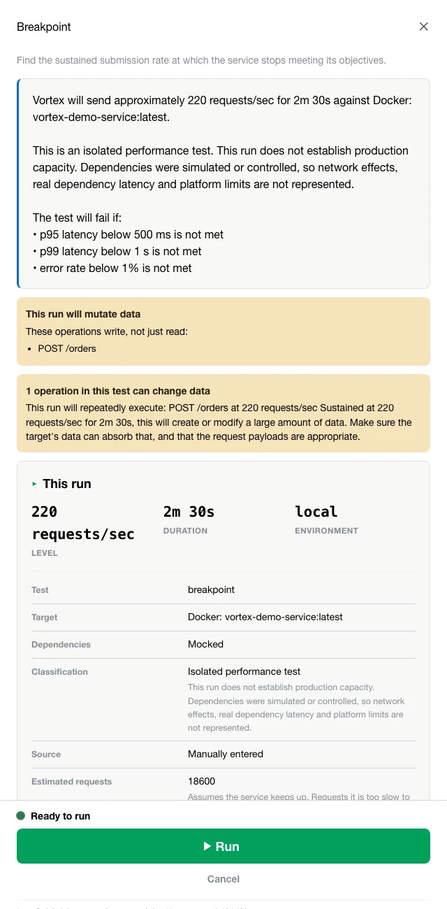
Target, actual, p95, and error rate update every five seconds while k6 runs the workload for real — no simulated progress bar standing in for it.
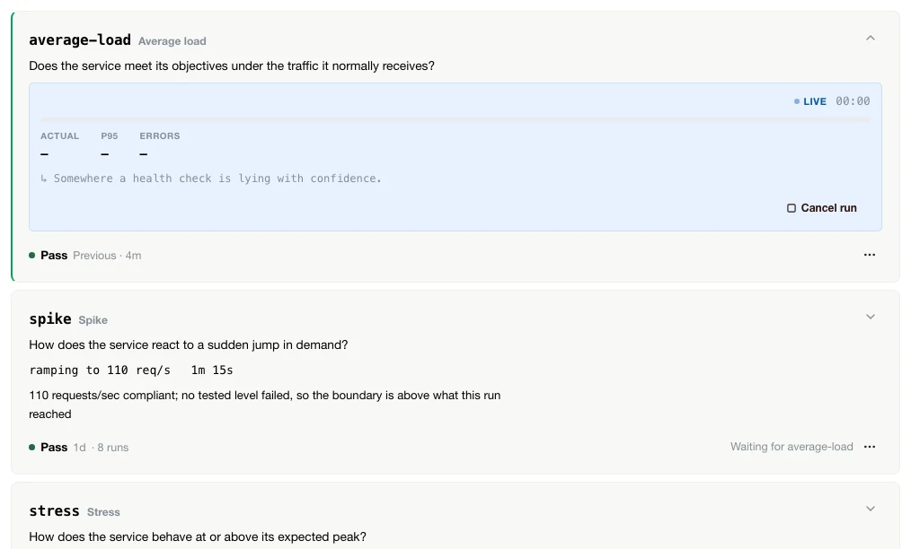
A one-line answer first, then a verdict, an evidence-quality label, and the headline numbers — throughput, p95, error rate, resource use, and whether capacity was actually established. Every claim traces back to a measurement.
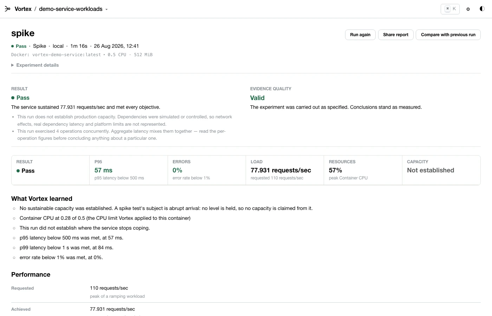
A local model can read the same evidence and explain it in plain language — it never determines pass/fail, and everything it claims has to cite a measurement or it’s discarded. Skip it entirely and the run is exactly as valid.
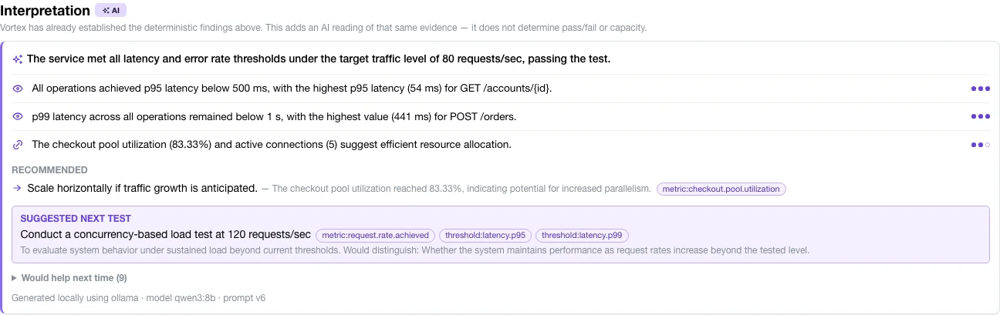
Separate from the nine steps above, and worth doing for any service that has real users: give Vortex something to compare a workload against, on the service’s Production reality panel.
Is it live yet?
Connect once, under Settings — one endpoint for the whole workbench. Vortex spawns
npx mcp-remote locally, which handles Dynatrace’s own sign-in
once; the session is reused after. Each service then points at it independently:
search by name, or paste the entity id directly. Only throughput, latency, and
error-rate queries travel to Dynatrace — never a request to interpret or summarize
anything.
An endpoint, a default observation window, and local-bridge sign-in — configured once for every service that opts into it.
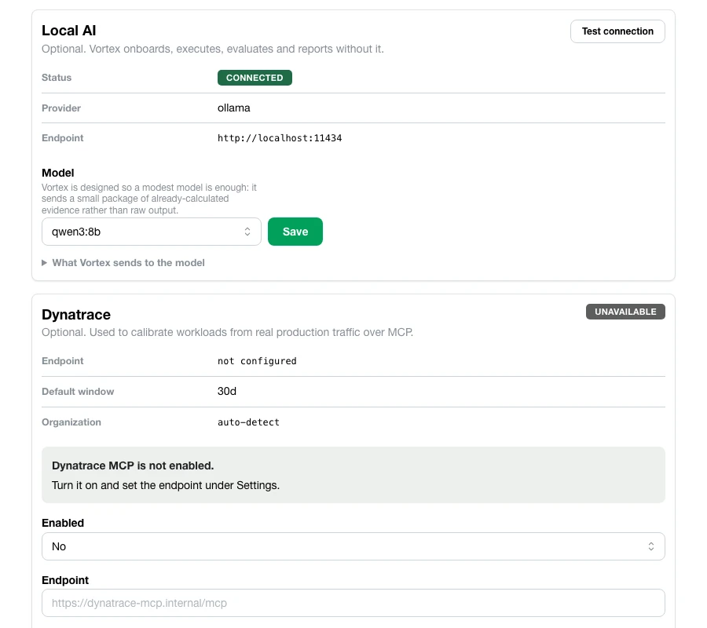
There’s no live traffic to observe — so enter a projected baseline by hand instead: an expected average rate and peak. Vortex treats it exactly like an observed one, proposing an average-load, stress, spike, and capacity test derived from those numbers, and computing headroom against them once a run passes.
An average and p95 rate, entered by hand, become the same proposed-test table a Dynatrace-observed baseline would produce.
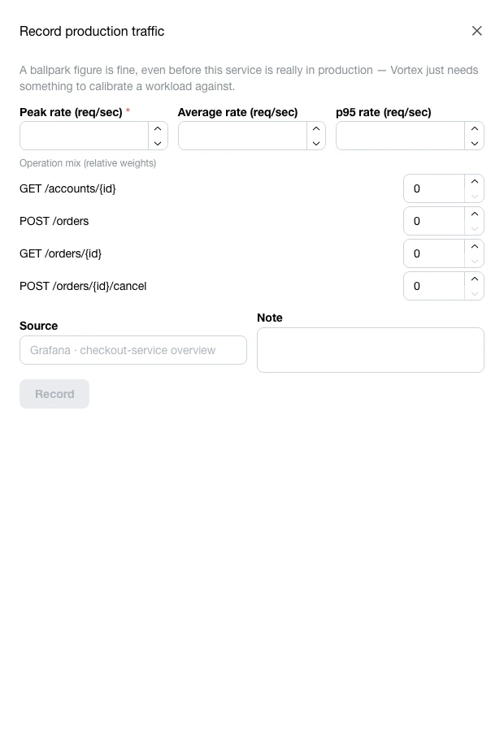
A green k6 exit code just says a script finished. Here’s what actually backs a Vortex verdict — five claims, and what each one refuses to be.
A cloud dashboard you don’t control.
A workbench that runs on your machine.
Against your services — no account, nothing leaves.
A model’s opinion.
Ordinary code.
Verdicts, breakpoints, and headroom, computed from what your run measured — the same evidence always yields the same conclusion, on any machine. (The raw numbers themselves still depend on the machine that produced them — a faster box runs a faster test. It’s the logic that never moves.)
An unverifiable claim.
A finding that cites its evidence.
Every AI finding names the measurement behind it, or it gets discarded before you ever see it.
An invented number.
Traffic you actually observed.
Headroom is established tested capacity divided by observed production peak. If the two aren’t comparable — wrong units, an isolated test, no capacity actually established — Vortex refuses to produce a number rather than guess.
An overclaim.
“Not established by this test.”
Treated as a valid, honest answer — and Vortex will say it plainly when that’s the truth.
A different kind of trust than the last section’s — not about the verdict, but about whether the test itself outlives the person who built it.
Not a setting saved to your machine. A file saved to the repo.
Every operation, workload, and objective you define lands in one plain-text file,
.vortex/vortex.yaml, next to the service it describes. Commit it, and a
teammate — or CI — runs the exact test you did. Not their memory of it.
Not a guess anymore — a verdict you can defend.